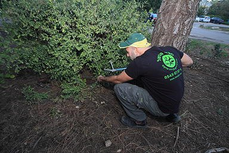

לוכדי הכרמלCarmel Catchers
הדברה ולכידת נחשים בחיפה ובכרמל.Pest control and snake catching in Haifa and on the Carmel.
נחל כלח, הכרמל · תמונה להמחשהNahal Kelah, Mount Carmel · illustrative photo

תומר אבניTomer Avni
הדברה ולכידת נחשים, בחיפה והסביבה.Pest control and snake catching, in and around Haifa.
- תומר אבניTomer Avni
- הדברה ולכידת נחשיםPest control and snake catching
- מהWhat
- נחשים, חולדות ומזיקיםSnakes, rats and other pests
- איפהWhere
- חיפה והסביבהHaifa and around
מחיפהFrom Haifa
קופסה על הגג, סולם לידה, ויוצאים לדרך.A box on the roof, a ladder beside it, and off they go.
הרכב של לוכדי הכרמל · תמונה שלהםThe Carmel Catchers car · their own photoאל השבילTo the trail
נחשים בישראל מוגנים בחוק.Snakes are protected by law in Israel.
נחל כלח · תמונה להמחשהNahal Kelah · illustrative photoבין האבניםAmong the stones
נחש בצבעי האבן והעשב, כמעט בלתי נראה.A snake in the colours of stone and sage, almost invisible.
תמונה להמחשהIllustrative photoבחזרה הביתהBack home
הכרמל הוא הבית שלהם. גם שלנו.The Carmel is their home. Ours too.
נחל כלח אל הים · תמונה להמחשהNahal Kelah towards the sea · illustrative photoמה מצאתם?What did you find?
סמנו מה ואיפה, ותומר יקבל הודעה מוכנה.Mark what and where, and Tomer gets a ready message.
5.0 מ-32 ביקורות5.0 from 32 reviews
מה כתבו בגוגל על תומר.What people wrote about Tomer on Google.
״תומר סופר נחמד ומאוד מקצועי ושירותי! הסביר, בדק ובחן מקומות, הפך אבנים בגינה ומצא חורים מהם נכנסו נמלים לבית - עשה מעל ומעבר! מומלץ בחום״
“Tomer is super nice, very professional and helpful! He explained, checked the spots, turned over stones in the garden and found the holes the ants came in through. Above and beyond! Highly recommended.”
״הזמנתי את תומר לרחוב הס בחיפה בגלל מכת פרעושים סביב הדירה. תומר עלה עוד בשיחה על מקור הפרעושים, ולאחר שהגיע לא היה מוכן לגבות כסף בגלל חוסר גישה לגינת השכן שהייתה המקור לבעיה. אתה אדם ישר ומקצועי ומגיע לך 5 כוכבים מאיתנו״
“I called Tomer to Hess Street in Haifa about fleas around the flat. He worked out the source already on the phone, and once there he refused to charge because he couldn’t reach the neighbour’s garden, where the problem came from. You’re an honest professional and you deserve 5 stars from us.”
״סבלתי ממכת תיקנים גרמניים במטבח, מרגע ההדברה אין זכר לג׳וק אחד, כמו קסם! תומר בחור מקצועי יסודי ואדיב, ממליצה בחום!!״
“I had German cockroaches all over the kitchen. Since the treatment there’s not a single one left, like magic! Tomer is professional, thorough and kind. Warmly recommended!”
הביקורות מגוגל, בלשונן. התרגום לאנגלית שלנו.Reviews from Google, quoted as written in Hebrew; English translations are ours.
נוגה 7, חיפה7 Noga St, Haifa
חיפה, הקריות, טבעון, יקנעם, זכרון יעקב, עכו ועמק יזרעאל.Haifa, the Krayot, Tivon, Yokneam, Zikhron Ya’akov, Akko and the Jezreel Valley.